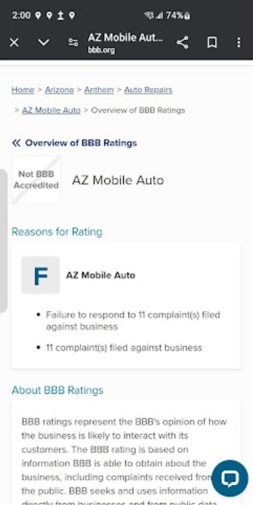
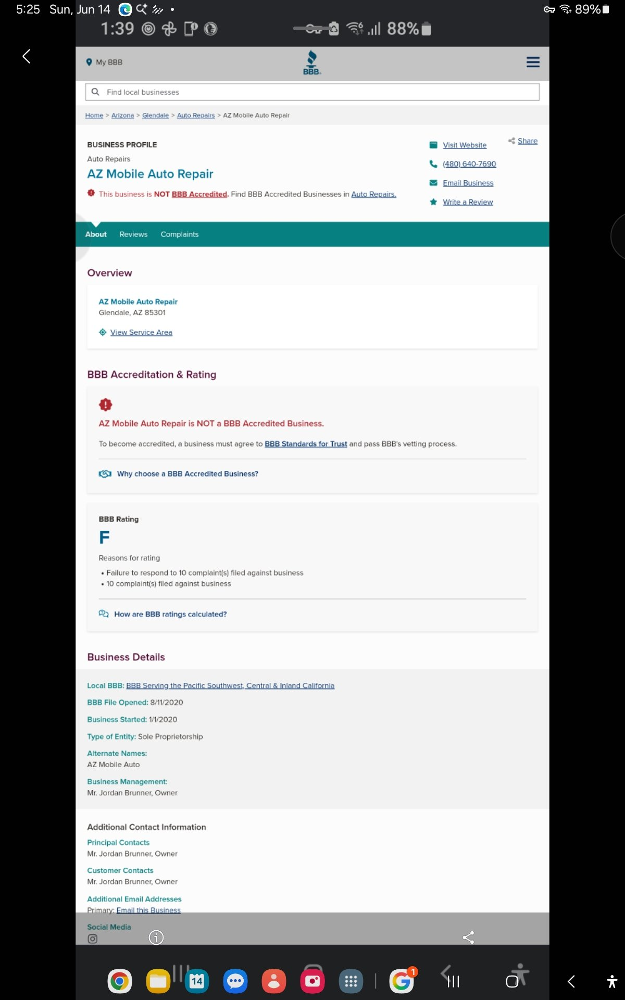
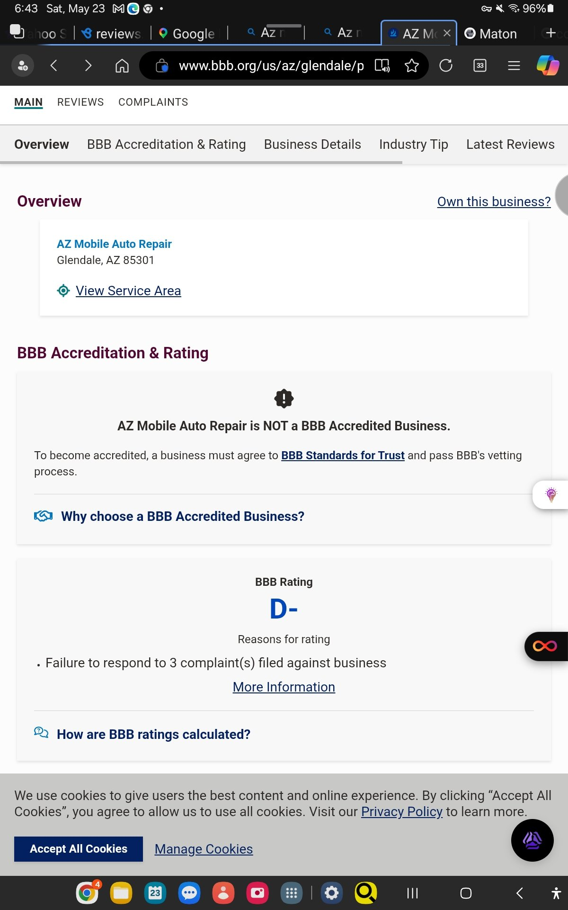
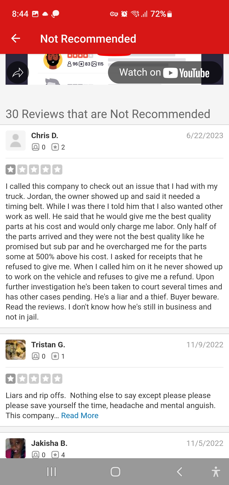

Queen Creek / San Tan Valley, Arizona · Compiled entirely from public records · Last updated October 21, 2026
Before you hand your keys — or your money — to Swift Fix Mobile Auto, read the documented public record behind the name.
The business
Legal name
Swift Fix Mobile Auto LLC (Arizona)
Owner / member
Jordan James Brunner (per Arizona Corporation Commission filing, August 2026)
Address
776 W Trellis Rd, Queen Creek, AZ 85140
Phone
(520) 683-4078
Previously operated as
AZ Mobile Auto Repair (Glendale, AZ, since 2020) and AZ Mobile Auto (Anthem, AZ) — same owner
The public record
Cottonwood Police report (May 2017): Brunner was arrested as the driver who dropped off and picked up the men who burglarized the Hookies N Bookies vape store in Cottonwood — about $15,000 in merchandise taken. This is the 2017 case behind his Yavapai County probation. (Cottonwood PD incident W17005618)
Cottonwood Police report (October 2018): cited for stealing his own grandmother's business debit card (Sedona Air Tours) and charging $551.18 — while on probation for the burglary. (Cottonwood PD incident W18013927)
Yavapai County Sheriff (March 2017): Brunner admitted to a deputy that he stole his sister's debit card; $213.04 was charged before it was deactivated, and he had offered her $500 to drop the charges. (Incident report 17-007696)
Maricopa County Sheriff (February 2026): misdemeanor theft report naming Jordan J. Brunner as the suspect. (Report IR26003144)
Peoria Municipal Court: State of Arizona vs. Jordan James Brunner, case M-0750-CT-202200364 — disposition September 2024: failure to comply on civil traffic offenses, with a history of defaults; a registration hold was placed at MVD in March 2026. (azcourts.gov)
Court records search: a misdemeanor fraudulent use of a credit card out of Cottonwood Municipal. (Public records search)
Swift Fix Mobile Auto reviews — and the BBB record
Swift Fix Mobile Auto's Google listing shows a perfect 5.0 stars — from exactly two reviews, both posted within weeks of the LLC's formation in August 2026. One comes from an account with no other review history.
Compare the Better Business Bureau record for the same owner's prior business:
BBB lists Jordan Brunner as owner of AZ Mobile Auto Repair (Glendale) — not accredited, rated B- for failure to respond to a complaint. Its customer-review average on BBB is 1 out of 5 stars.
BBB previously displayed a second profile for this business under its alternate name, AZ Mobile Auto (Anthem), rated F: 11 complaints filed, failure to respond to all 11. BBB has since removed that profile.
BBB's pages also displayed the Glendale business itself at F (10 complaints) and D- (3 complaints) during 2026 — today it shows B- with a single complaint, and that complaint is still unanswered.
The earlier displays are documented by dated screenshots in the evidence section below.
The pattern
AZ Mobile Auto Repair (2020, BBB B-) → AZ Mobile Auto (BBB F, 11 complaints) → Swift Fix Mobile Auto LLC (August 2026). Same owner, new business name, reset reviews.
Evidence — the BBB record, as BBB displayed it

BBB ratings overview for "AZ Mobile Auto" (Anthem, AZ): F — "Failure to respond to 11 complaint(s) filed against business." Captured 2026. BBB has since removed this profile.

BBB profile for AZ Mobile Auto Repair (Glendale, AZ) displaying an F rating — "Failure to respond to 10 complaint(s)." Captured 2026. The same profile shows B- today.

BBB profile for AZ Mobile Auto Repair displaying a D- rating — "Failure to respond to 3 complaint(s)." Captured May 23, 2026.

Yelp, captured August 25, 2025 (archived screenshot).
Verify it yourself
Every fact on this page comes from a public record. Check them directly:
Arizona Corporation Commission — business entity search (search: Swift Fix Mobile Auto LLC; AZ Mobile Auto Repair)
Arizona Attorney General — consumer complaint portal (for filing your own complaint)
Before paying anyone for mobile auto repair: confirm the exact legal business name, check the owner in state filings, read the complaint history — and get the estimate in writing.